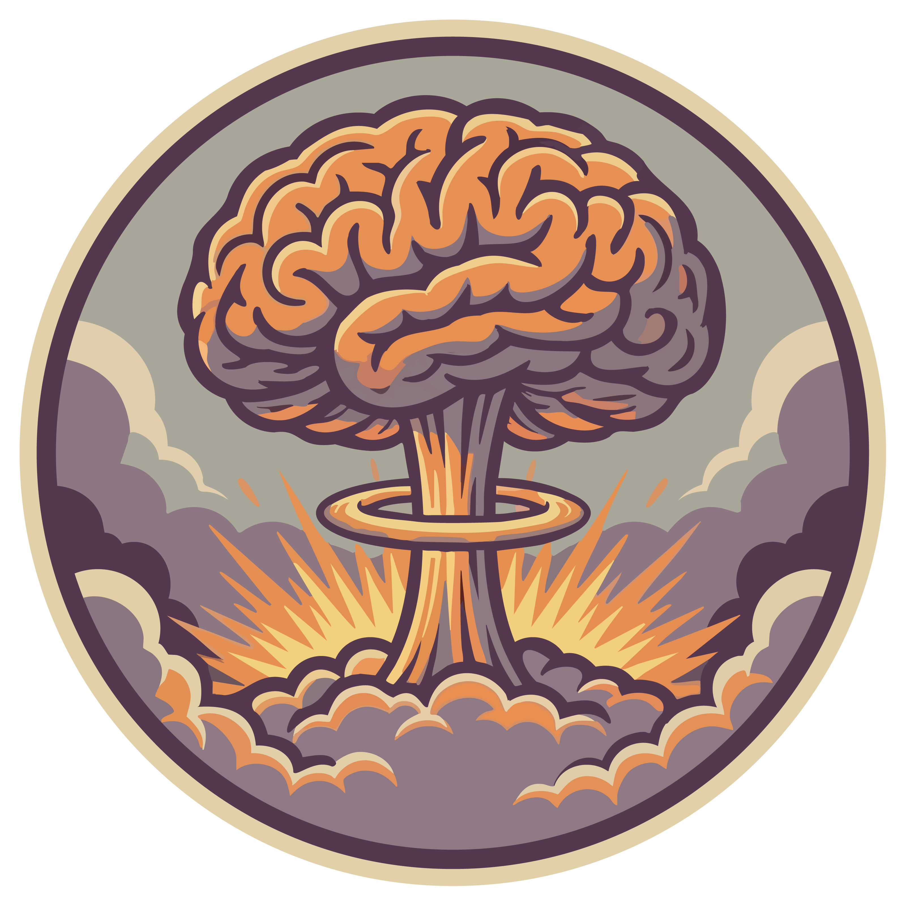

Neurons process information in ways that depend on their cell type, connectivity, and the brain region in which they are embedded. However, inferring these factors from neural activity remains a significant challenge. To build general-purpose representations that allow for resolving information about a neuron's identity, we introduce NuCLR, a self-supervised framework that aims to learn representations of neural activity that allow for differentiating one neuron from the rest. NuCLR brings together views of the same neuron observed at different times and across different stimuli and uses a contrastive objective to pull these representations together. To capture population context without assuming any fixed neuron ordering, we build a spatiotemporal transformer that integrates activity in a permutation-equivariant manner. Across multiple electrophysiology and calcium imaging datasets, a linear decoding evaluation on top of NuCLR representations achieves a new state-of-the-art for both cell type and brain region decoding tasks, and demonstrates strong zero-shot generalization to unseen animals. We present the first systematic scaling analysis for neuron-level representation learning, showing that increasing the number of animals used during pretraining consistently improves downstream performance. The learned representations are also label-efficient, requiring only a small fraction of labeled samples to achieve competitive performance. These results highlight how large, diverse neural datasets enable models to recover information about neuron identity that generalize across animals.